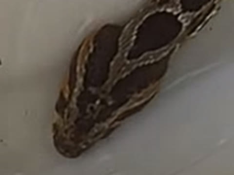
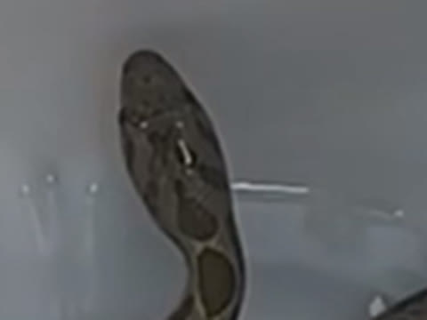
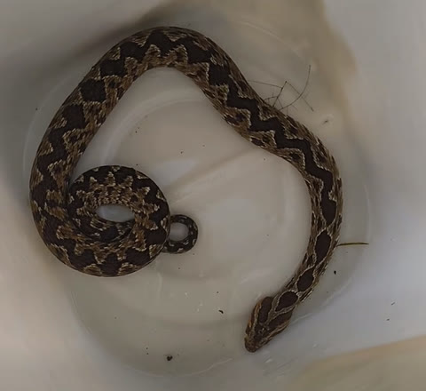
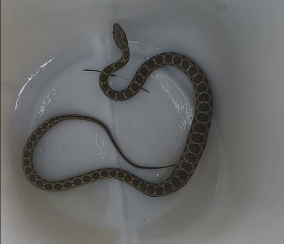
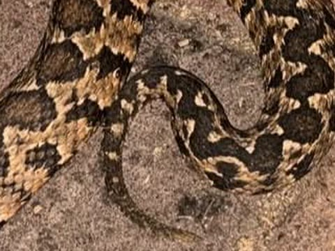
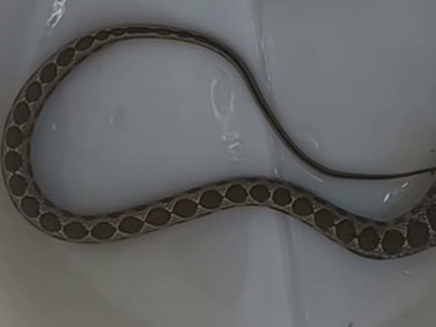
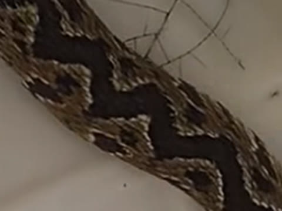
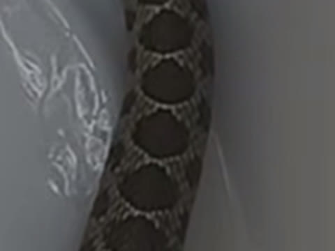
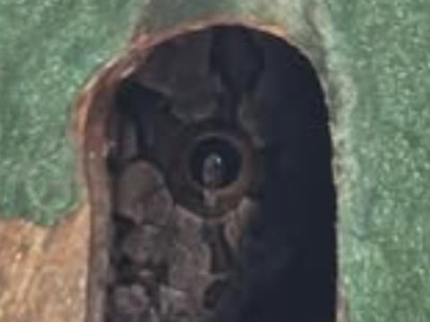

טבלת הבדלים
| צפע | זעמן |
|---|---|
| ראש | |
 משולש, רחב מהצוואר |
 מוארך, צר |
| גוף | |
 עבה וקצר |
 דק וארוך |
| זנב | |
 קצר |
 ארוך ודק |
| דוגמה | |
 זיגזג רציף לאורך הגב |
 כתמים עגולים/מרובעים בשורות |
| אישון | |
 אנכי אנכי |
 עגול |
| התנהגות | |
| נשאר במקום, מתכווץ ומשמיע שריקה | בורח במהירות |
תמונת האישון של הצפע: ארבל לוי, CC BY-SA 4.0 (חיתוך מהתמונה המקורית). שאר התמונות בטבלה: זהר להט (הלוכדת הירוקה).
שימו לב: תמונה מרחוק או בתאורה גרועה מטעה. מי שלא בטוח, מתייחס לנחש כאל צפע.
בטיחות קודם: לא מתקרבים ולא תופסים נחש, גם אם נראה לכם שזה "סתם זעמן". תמונה ממרחק עדיפה על זיהוי מקרוב.
נחש בתוך הבית או בגינה: מזמינים מוציא נחשים מורשה, או פונים לרשות הטבע והגנים (*3639).
נשיכה: מתרחקים, מקבעים את האיבר ומתקשרים למד"א (101). הדף הזה הוא עזר לימודי ולא תחליף לזיהוי של מומחה.